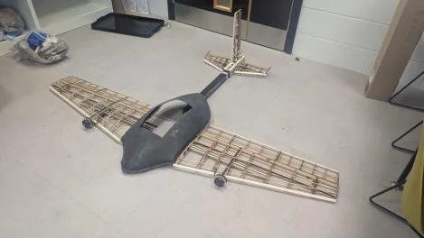

I design, build and test robots and aircraft systems.
I studied Aerospace Engineering at Southampton and Mechatronics & Robotics at Leeds. Here are some of the things I’ve worked on, from control systems in MuJoCo to CFD and physical builds.
Watch the wheeled-biped obstacle course
MuJoCo simulation — obstacle avoidance, jumping and parking.
19.4%faster navigation with LQR/LQI vs PID
73.7%lower endpoint error with LQR/LQI
15.87%lower drag for modified VTOL design at 0°
Projects

Jumping self-balancing wheeled biped
Robotics & control · MSc dissertation

Eurobot autonomous mobile robot
Physical build · Competition robotics

Multirotor UAV with manipulator
Aerial robotics · Individual design work

VTOL aerodynamic optimisation
Aerospace · CFD

UAS Challenge airframe manufacturing
Hands-on fabrication · Team project

Ankle rehabilitation exoskeleton
Biomechatronics · CAD & FEA
More about me

Education
Leeds MSc · Southampton BEng
Aircraft planning, industry project work and customer-facing experience.
Experience
Professional work alongside university and after graduating

Societies & activities
Football leadership · Student engineering teams